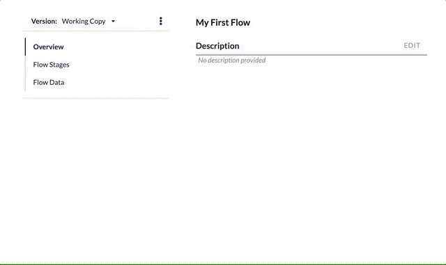

Create a Stage
To create a new Stage, select Flow Stages from the right side bar, then click the New Stage button. You will be prompted for a name. Once created, you can format the input data and begin adding Steps.
See also: About Flow Stages, Configure a Stage, About Stage Steps